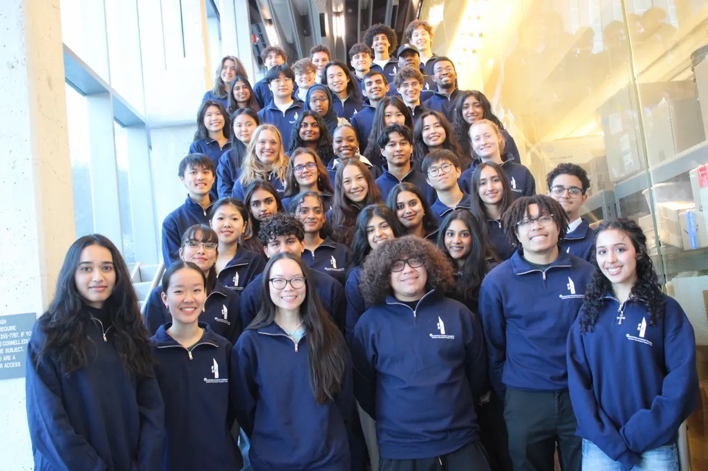

01 / Mission
Communities tell us what they need. We do the engineering, and they own and maintain what gets built.
Members work directly with partner communities on water, sanitation, and housing infrastructure, and stay with a project long enough to see whether it holds up.
As an active chapter of EWB-USA, we follow its standards for project review, safety, and community partnership. Members work every stage: needs assessment, technical design, implementation, and evaluation.

02 / Who We Are
Our team.
Our members come from many states and countries, and from a wide range of ethnic, cultural, and socioeconomic backgrounds. That breadth is not incidental to the work. Designing for a community you did not grow up in takes people who ask different questions, and who have seen firsthand what it means when infrastructure is built without asking.
They study across several of Cornell’s undergraduate colleges and many fields, from civil and environmental engineering to urban studies, statistics, cognitive science, and English. Every subteam recruits each semester, and no prior experience is required.
03 / What We Stand For
How we work.
Community-driven
Communities define the need and co-own what gets built. We require a local contribution and a maintenance partner before construction starts.
Built to Last
Designs are judged on whether they will still work years later. Durability and ease of maintenance come before anything clever.
Students Lead
Members run the engineering, fundraising, and logistics themselves.
Ethical Practice
As an EWB-USA chapter, our designs go through its safety and technical review process before construction.
04 / Over The Years
Chapter history, 2009 to now.
The Cornell Chapter Is Founded
Students start the Cornell University chapter of Engineers Without Borders.
International Origins
Built a walking bridge to improve the safety and productivity of agricultural fields, and optimized water management for cleaner, more reliable fresh water.
Going Domestic: EPOD
Partnered with Every1sHome to design an inexpensive, portable shelter for the local homeless population.
Aquaponics Challenge
Designed an aquaponics greenhouse facility and affordable, sustainable refrigeration equipment.
Solar Irrigation
Implemented an irrigation system to address food and economic insecurity for a farming community.
Digital Agriculture Begins
Launched a machine-learning drone and rover system to detect Northern Leaf Blight in maize before it spreads.
Sustainable Housing
Partnered with First Families Now to design a cost-effective, permanent Sustainable Housing Unit.
Software for Sustainability
Built carbon-offset tools with Sustainable Tompkins and the Tompkins Climate Fund, the Cornell Wardrobe app, and a Finger Lakes ReUse donation app.
Sanitation Initiative
Visited San Cristóbal and adopted a multi-year sanitation project, now entering its implementation phase.
Implementation Trip
Traveled to Barrio San Cristóbal and built the public restroom and attached septic system during a three-week trip, so waste no longer contaminates the new well.
05 / 18 Fields of Study
Eighteen fields of study.
- Astronomy
- Biological Engineering
- Biology
- Biomedical Engineering
- Chemical Engineering
- Civil Engineering
- Cognitive Science
- Computer Science
- Earth and Atmospheric Sciences
- Electrical and Computer Engineering
- English
- Environmental Engineering
- Math
- Mechanical Engineering
- Near Eastern Studies
- Operations Research and Engineering
- Statistics
- Urban and Regional Studies
Applications open each semester.
Engineers and non-engineers alike run our projects. Applications open each semester.